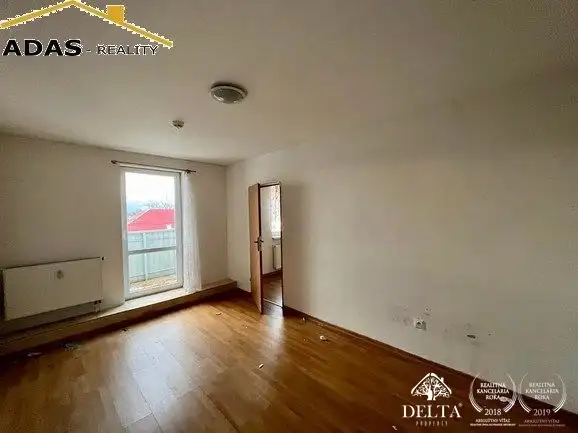
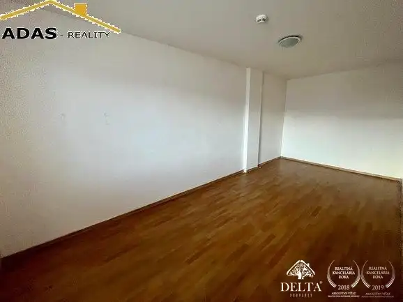
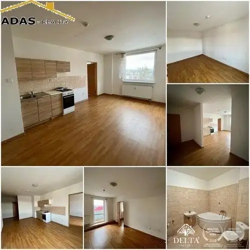
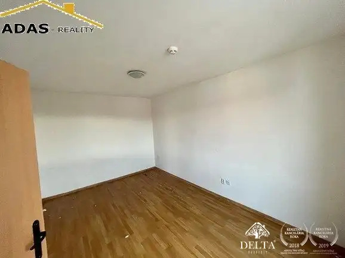
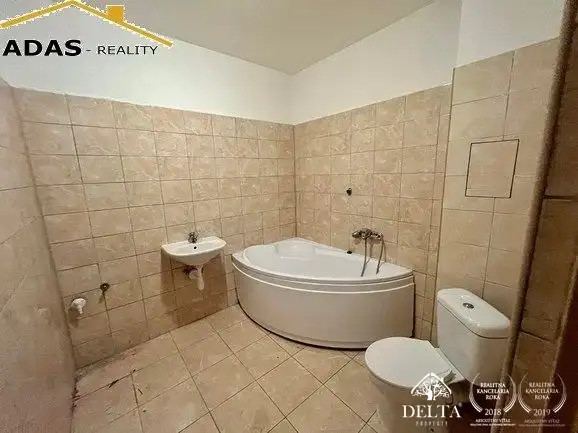
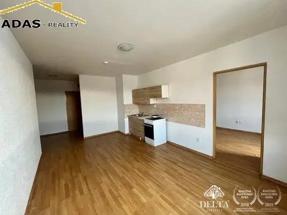

Ponúkame na dlhodobý prenájom zrekonštruované 1-izbové a 2-izbové byty v pokojnej časti Liptovského Mikuláša na ulici Revolučná.
Liptovský Mikuláš







- Dispozícia2-izbový
- Plocha50 m²
- Poschodie2. z 3
- StavČiastočná rekonštrukcia
- VlastníctvoFiremné
- Energetická triedaB
O nehnuteľnosti
Ponúkame na dlhodobý prenájom zrekonštruované 1-izbové a 2-izbové byty v pokojnej časti Liptovského Mikuláša na ulici Revolučná. Byty sa nachádzajú v zateplenom 3-podlažnom komplexe (Energetický certifikát B), ktorý zaručuje komfortné bývanie s výbornou dostupnosťou do centra.Základné informácie:Výmera: od 30 m² do 65 m²Dispozícia: 1 alebo 2 obytné izby, obývacia izba prepojená s kuchyňou, kúpeľňa spojená s WC (vaňa).Stav: Byty sú po rekonštrukcii – plastové okná, plávajúce podlahy, keramická dlažba.Vybavenie: Byty sa prenajímajú nezariadené, k dispozícii je kuchynská linka a kombinovaný sporák (elektrická rúra / plynové horáky na PB bombu).Bonusy: Každý byt disponuje balkónom a vyhradeným parkovacím miestom priamo pred domom.Lokalita:Bytový dom sa nachádza v tichej časti Liptovská Ondrášova. Pešia dostupnosť do centra mesta je cca 15 minút. V blízkosti sa nachádzajú potraviny, autobusová a železničná stanica.Cena a podmienky:Nájomné: od 400 € do 480 €/mesiac (vrátane energií).Podmienky: Pri podpise zmluvy sa hradí prvé mesačné nájomné a depozit vo výške jedného nájmu.Kontakt pre obhliadky:Andrea Šubová | 0917 757 338 | andrea.subova@adas.sk
Parametre
- Bezpečnosť
- Kamerový systém, Videovrátnik
- Cena vrátane energií
- Áno
- Doprava
- Vlak, Diaľnica, MHD, Cesta
- Druh
- 2 izbový byt
- Dátum zverejnenia
- 25. 02. 2026
- Energetický certifikát budovy
- B
- Podlažie
- 2
- Počet izieb / miestností
- 2
- Počet nadzemných podlaží
- 3
- Rok výstavby
- 2017
- Stav nehnuteľnosti
- Čiastočná rekonštrukcia
- Telekomunikácie
- Internet
- Typ
- Prenájom
- Typ konštrukcie
- Zmiešaná
- Umiestnenie
- Ďalšie nadzemné podlažie
- Vlastníctvo
- Firemné
- Vybavenie
- Balkón, Verejné parkovanie, Vyhradené parkovanie
- Vybavenie objektu
- Holopriestor
- Vykurovanie
- Ústredné
- Zariadenie
- Holopriestor
- Zdroj tepla
- Teplo z kotolne
- Úžitková plocha
- 50 m²
Kde to je


Mohlo by Vás zaujímať
 DomNové
216 000 €Bývajte pod Tatrami! Nové rodinné domy v Mlynčekoch – AKCIA -10%
Mlynčeky
140 m²
DomNové
216 000 €Bývajte pod Tatrami! Nové rodinné domy v Mlynčekoch – AKCIA -10%
Mlynčeky
140 m²
 DomNové
260 000 €Ponúkame na predaj novostavbu rodinného dom ktorý sa nachádza v obci Župčany, vzdialenej, len 8km od Prešova
Župčany
200 m²
DomNové
260 000 €Ponúkame na predaj novostavbu rodinného dom ktorý sa nachádza v obci Župčany, vzdialenej, len 8km od Prešova
Župčany
200 m²
 BytNové
166 000 €Ponúkame na predaj 3-izbový byt s loggiou, nachádzajúci sa v mestskej časti Palúdzka
Liptovský Mikuláš
3-izbový60.92 m²5. podlažie
BytNové
166 000 €Ponúkame na predaj 3-izbový byt s loggiou, nachádzajúci sa v mestskej časti Palúdzka
Liptovský Mikuláš
3-izbový60.92 m²5. podlažie